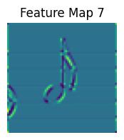
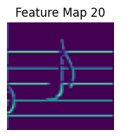
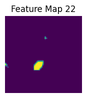
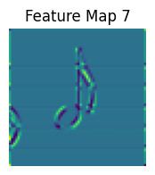
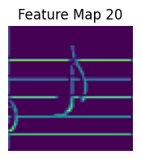
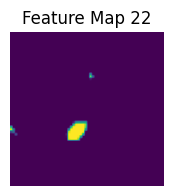

About Musical Note Classifier
Project Overview
The Musical Note Classifier is a deep learning model designed to classify musical notes based on their pitch and length. The model achieves remarkable performance with a test accuracy of 99.66%.
Model Highlights
- Architecture: Convolutional Neural Network (CNN) with 696,255 parameters.
- Input: Grayscale images of size (64, 64, 1).
- Dataset: Augmented dataset with 73,185 samples.
- Output: 85 classes representing note combinations of pitch and length.
Visual Examples
 





Team Members
- Dongim Lee - E:C, Class of 2027 - Combined model
- Sally Lee - E:C, Class of 2027 - Pitch model
- Zara Coakley - E:C, Class of 2027 - Length model
More Information
For more details about the model, visit our Hugging Face page:
Hugging Face: Musical Note Classifier
Back to Home